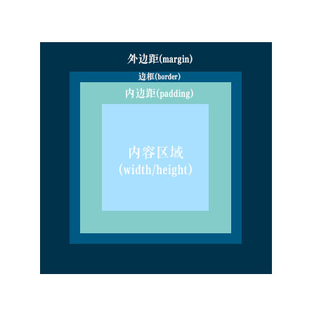
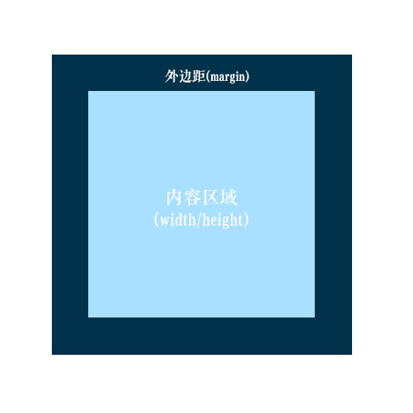

盒式模型
定义
在一个文档中，每个元素都被表示为一个矩形的盒子。[1]
这个盒子的大小由以下四个因素决定：
- 外边距
- 边框
- 内边距
- 内容区域
设置 box-sizing: content-box 表示使用标准模式。
设置 box-sizing: border-box 表示使用怪异模式。
标准模式
标准模式下：元素总宽度/高度 = margin + border + padding + width/height

怪异模式
怪异模式下：元素总宽度/高度 = margin + width/height

也就是说，怪异模式下width/height = 标准模式下width/height + border + padding
其他
外边距和内边距有什么区别？
如果只是想让元素留白，从效果上看两者没有区别。
如果设置了background-color、box-shadow、border-radius、border等属性，其特效的生效范围会受padding影响(但不受margin影响)。
<div style="background-color: #888;color: #fff;height: 50px;width: 50px;padding: 50px;margin: 50px;box-shadow: 10px 10px 10px #000;border-radius: 10%;border: 10px solid #000;">这里是内容。</div>
行内元素的width/height
行内元素width/height由内部内容决定，无法直接通过width/height设置